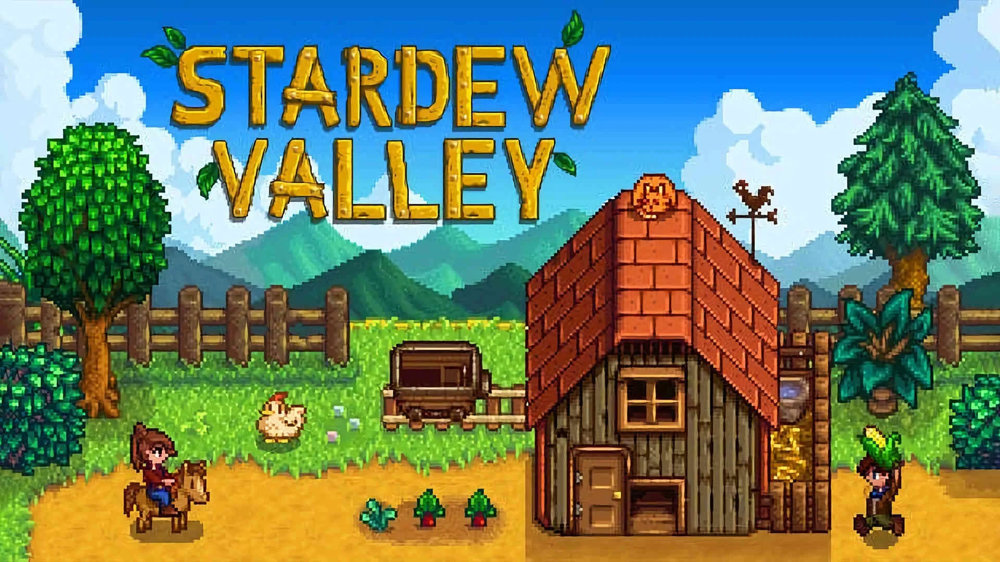

Solteros:
- Alex
- Elliott
- Harvey
- Sam
- Sebastian
- Shane
Bienvenido a mi página web
Creador del juego:ConcernedApe
Stardew Valley es un juego relajante sin final, que permite al jugador cumplir el juego de manera no lineal.
Me gusta este juego para relajarme y desconectar de los problemas de la vida real. Mi intención inicial al crear esta guía era facilitar a más gente la búsqueda de gúis de juegos.

En Stardew Valley hay muchos aldeanos con los que podemos hablar y mejorar nuestra amistad.
Estos son algunos datos importantes sobre Stardew Valley.
Nombre: Stardew Valley Creador: ConcernedApe Lanzamiento: 2016 Género: Simulación y rol Plataformas: PC, Nintendo Switch y otras Objetivo: Gestionar una granja
Puedes consultar más información sobre el juego en los siguientes enlaces:
Stardew Valley es un juego de granjas & aventuras.
Para escribir etiquetas HTML utilizamos símbolos como < y >.
Mi valoración del juego es ★ porque me parece muy entretenido.